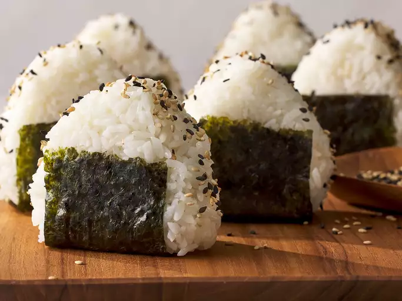

Main Page
Onigiri Recipe

Description
These rice balls are a staple of Japanese lunchboxes(bento).
You can put almost anything in these rice balls.
Ingredients
- 4 Cups uncooked short-grain white rice
- 5 1/2 Cups water, divided
- 1/4 Teaspoon salt
- 1/4 Cup bonito shavings (dry fish flakes)
- 2 Sheets nori (dry seaweed), cut into 1/2-inch strips
- 2 Tablespoons sesame seeds
Steps
- Wash rice in a mesh strainer until water runs clear.
- Combine washed rice and 4 1/2 cups water in a saucepan.
- Bring to a boil over high heat, stirring occasionally.
- Reduce heat to low; cover, and simmer rice until water is absorbed, 15 to 20 minutes.
- Let rice rest for 15 minutes to continue to steam and become tender. Allow cooked rice to cool.
- Combine remaining 1 cup water with salt in a small bowl; use to dampen hands before handling rice.
- Divide cooked rice into 8 equal portions. Use one portion of rice for each onigiri.
- Divide one portion of rice in two.
- Create a dimple in rice and fill with a heaping teaspoon of bonito flakes.
- Cover with remaining portion of rice and press lightly to enclose filling inside rice ball.
- Gently press rice to shape into a triangle; wrap with a strip of nori and sprinkle with sesame seeds.
- Repeat with remaining portions of rice.